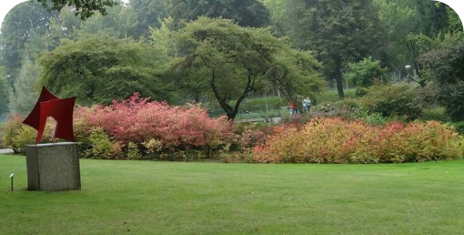
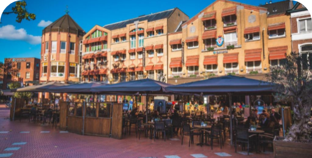
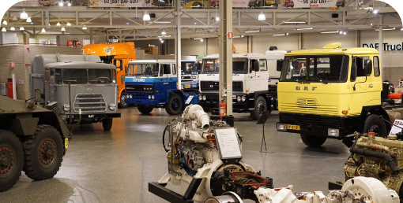
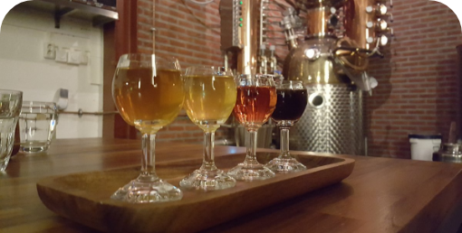

What to Do?

STADSWANDELPARK
The sun's shining and the temperature outside feels really nice, a walk through the park would be perfect!
The Stadswandelpark is a nice, calming park. It also has some great food & drink facilities.

Queen
It's a great time to enjoy the outside, why not go for a nice, cold drink on a terrace!
Queen Hotel Cafe Restaurant definitely lives up to it's name! It contains a big terrace in central Eindhoven.

DAF Museum
Considering the current weather isn't too great, spending a day at the indoor DAF Museum is a great choice of activity!
Experience and learn all about the history of DAF vehicles, starting all the way back in 1928.

Bottle Distillery
For today it'll be better to spend the day somewhere inside, why not go for a drink at Bottle Distillery!
This is the right place for a nice drink and food, wine tasting and even a workshop!